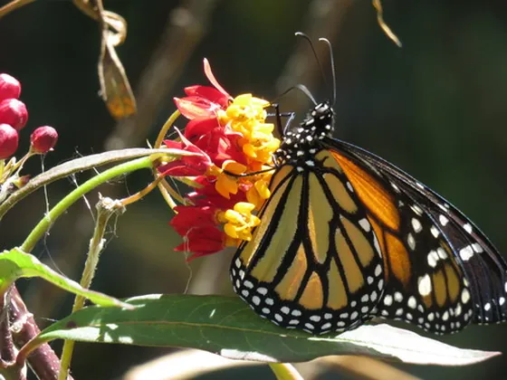
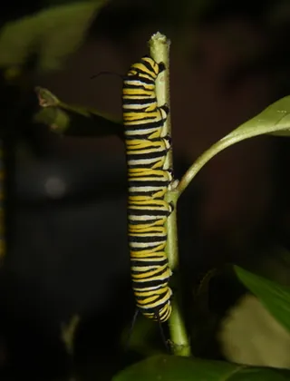
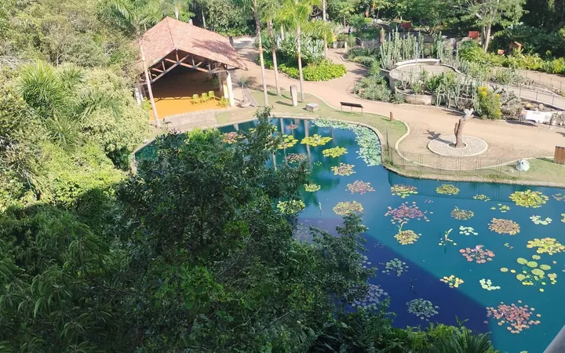
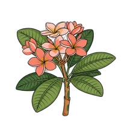
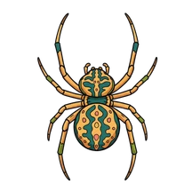
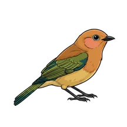
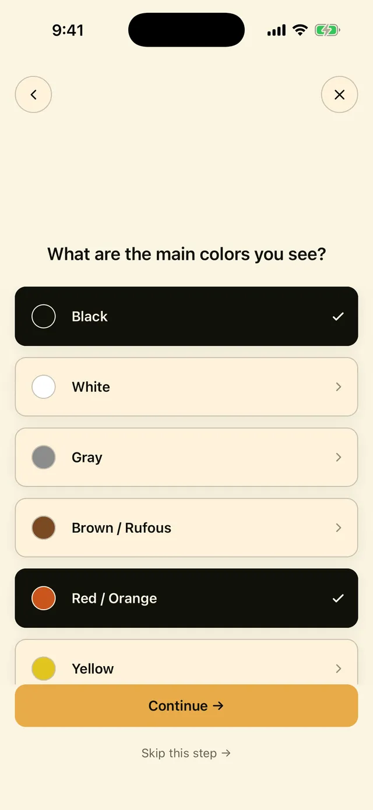

Monarch
Danaus plexippus
Tawari tells you who they are, and who they live with.
A living field guide to the nature of Colombia. Above all, it is an educational tool, to help you get to know the nature around you up close.
The Field-finds
A Field-find is the list of who lives in one place. It is not a score, and you don't have to finish it. Here are three:

87 speciesThe app has 25 Field-finds, from Los Flamencos Sanctuary to La Cocha Lake.
Photos: Mfrancoavellaneda (CC0, Wikimedia Commons) · Estefani Sandoval (CC BY-SA 4.0, Wikimedia Commons) · David (CC BY 2.0, Wikimedia Commons). Cropped.
Who eats whom
Every card tells you who a species lives with. This is how it looks on the monarch's:





Three of the seven relationships on its card, from GloBI. Photos: Juan Carlos Caicedo Hernández and Sebastian Serna Muñoz (CC BY 4.0, iNaturalist, iNaturalist), cropped. Drawings: Tawari.
The app
Can't find what you saw? Log it anyway, with a photo or a description, and the team will try to identify it.

No filler
For many species almost nothing is published. There the card tells only what is known, and invites you to add to it: with your sightings, or by sharing them on iNaturalist.
Named knowledge
Every written card cites its sources. We would rather name a people and a place than speak of "indigenous people" in general. And no card gives recipes or medical advice.
Where we are
Where the data comes from
Colombian sources first, always openly licensed and credited.
Waitlist
We write to you once, when your TestFlight invitation is ready.
Reserves, botanical gardens and birding clubs
Write to hello@tawari.id.